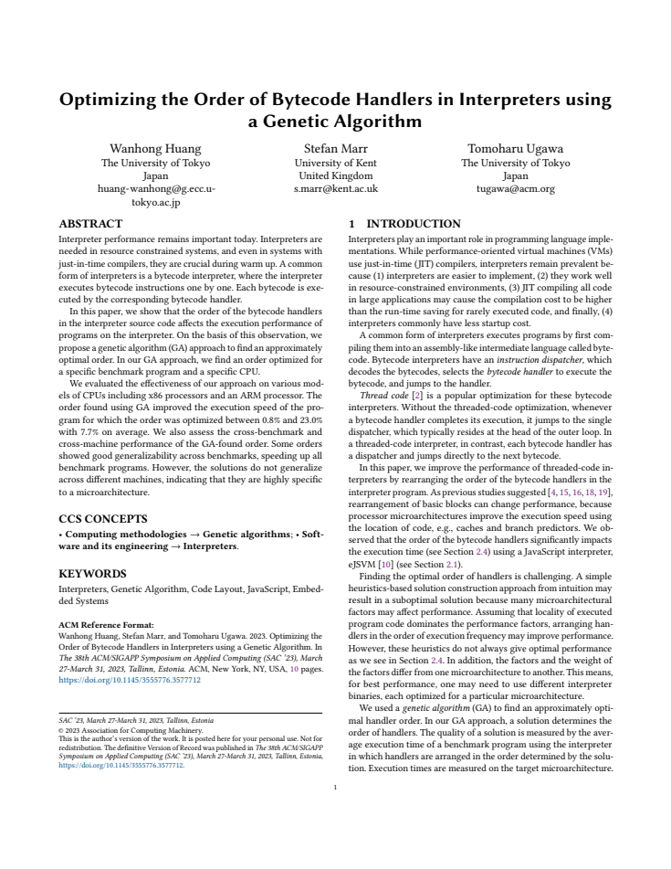
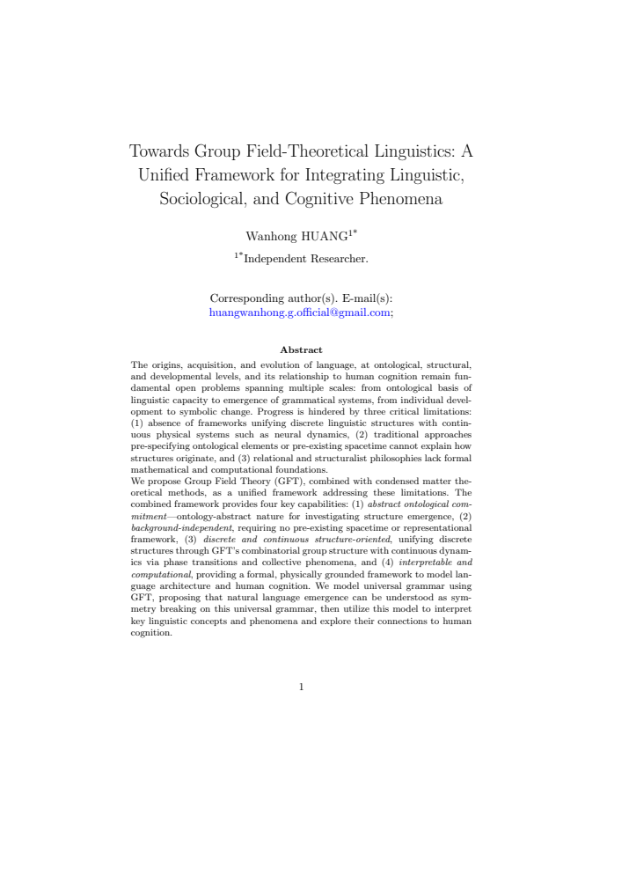
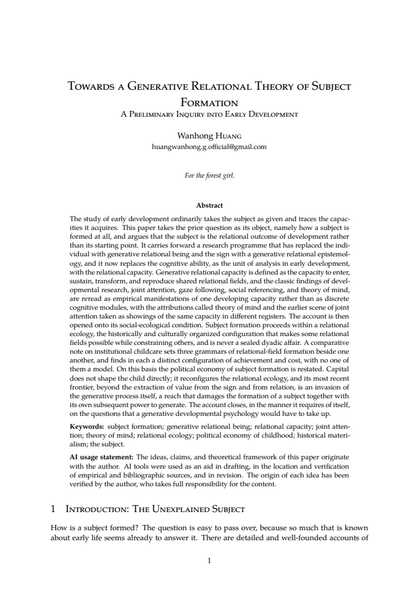
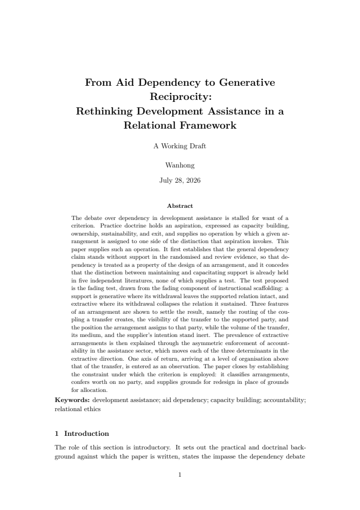
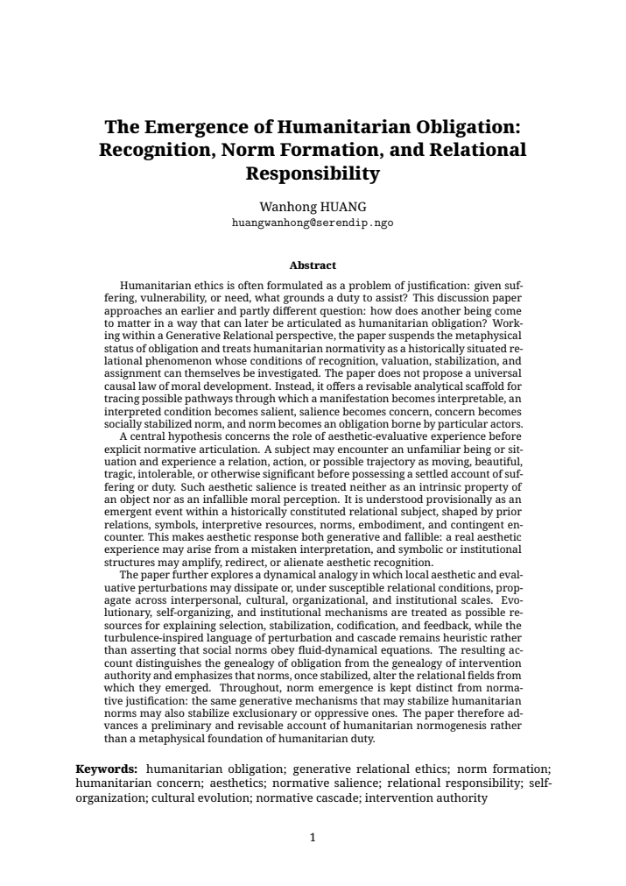
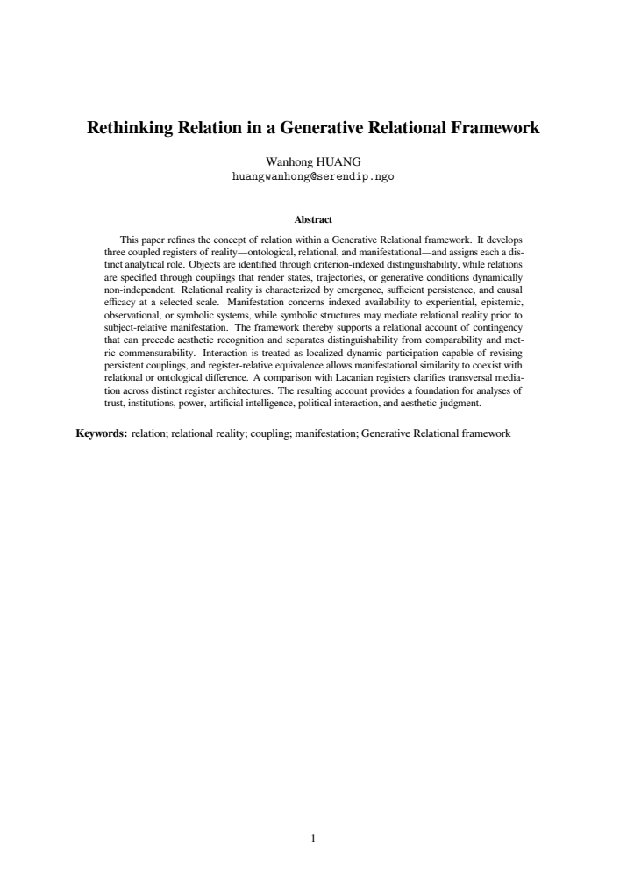

スライド 2 · 2023 · 査読付き国際会議論文・著者版
Optimizing the Order of Bytecode Handlers in Interpreters using a Genetic Algorithm
- Figure 5 · p.7
複数の CPU とベンチマークにおける実測結果。図中の誤差棒は 95% 信頼区間。原図をそのまま抜粋。
原稿の抜粋画像 ↗
学問と実践のあいだに
図・表・定義・原文段落を、元の論文とともに確認できます。
画像は原稿の連続した領域を抜粋し、図や数式そのものは描き直していません。

スライド 2 · 2023 · 査読付き国際会議論文・著者版
複数の CPU とベンチマークにおける実測結果。図中の誤差棒は 95% 信頼区間。原図をそのまま抜粋。
原稿の抜粋画像 ↗
スライド 5 · 2025 · 理論的提案・プレプリント
場の理論の語彙を用いて言語体系の生成を記述するモデルの原稿。モデル化における仮定と式を含む。
原稿の抜粋画像 ↗
スライド 7 · 2026 · 理論研究・プレプリント
同じ原稿が区別する存在論・動態・主体形成・関係的生態の四つの水準。
原稿の抜粋画像 ↗共有された関係の場に入り、維持し、変容させ、再生産する能力についての定義。
原稿の抜粋画像 ↗
スライド 8 · 2026 · 公開章稿・プレプリント
原表の表題・列見出しと Indicator／Proxy／Price の三行。後続の行は省略。
原稿の抜粋画像 ↗論文中の病院待診時間の説明例を含む段落全体。病院調査の結果ではない。
原稿の抜粋画像 ↗
スライド 9 · 2026 · Working Draft・プレプリント
受援は提供者への返礼義務を生まない。価値生成と支援の権利を分ける。
原稿の抜粋画像 ↗尊厳の保護を生成性の評価より先に置く制約。
原稿の抜粋画像 ↗
スライド 10 · 2026 · DRAFT・プレプリント
形成の説明が正当化を意味しないことを論じた原文段落。
原稿の抜粋画像 ↗
スライド 11 · 2026 · 研究草稿・プレプリント
外部からの記録可能性に沿って五つの部位を区別する原表。暫定的な概念整理。
原稿の抜粋画像 ↗
スライド 7 · 2026 · 研究草稿・プレプリント